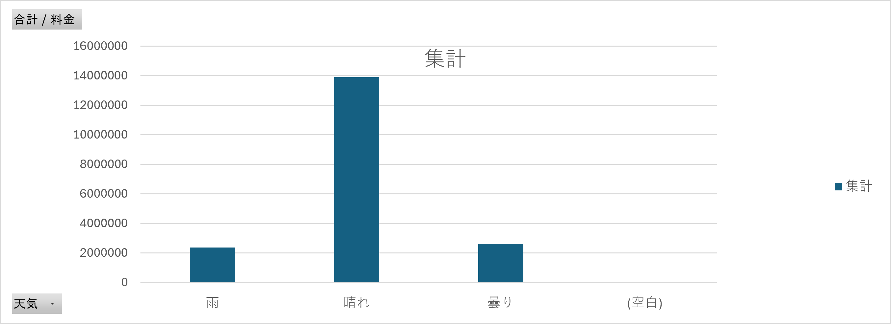
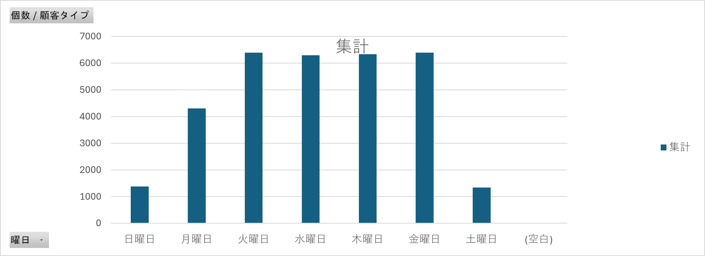
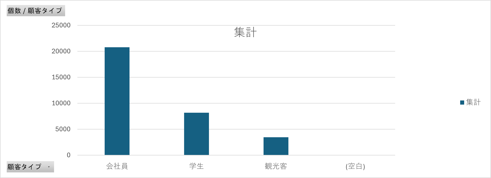
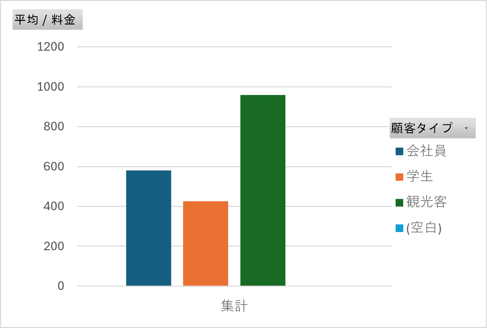

一年間通しての合計売上

18897950円
一年間通しての合計客数

32459人
天気別の売り上げ

天気によってかなり左右される。
月ごとの売り上げ

月ごとの顧客数

2,3,8,9月は客数がほかの月と比べて少なくなっていて、月ごとの売り上げとほとんど比例している。
そこで、客数が一番少ない9月（1915人）と一番多い10月（3279人）の売れている商品をくらべてみると、
サラダチキン弁当や、ヘルシーカレー、鮭の塩焼き弁当、豆腐ハンバーグ弁当、野菜たっぷり豚しゃぶ弁当などで差がついていた。
季節ものの商品などで差がついたのでは。と予想していたが、普通の弁当でここまで差がついた理由がわからない。
土日はあまり多くなく、平日に多い。→会社員の数が多いのかも？
予想通り会社員が多いことが分かった。
観光客が圧倒的に多く金を使っている。
そこで、客数が一番少ない9月（1915人）と一番多い10月（3279人）の売れている商品をくらべてみると、
サラダチキン弁当や、ヘルシーカレー、鮭の塩焼き弁当、豆腐ハンバーグ弁当、野菜たっぷり豚しゃぶ弁当などで差がついていた。
季節ものの商品などで差がついたのでは。と予想していたが、普通の弁当でここまで差がついた理由がわからない。
曜日ごとの合計客数

土日はあまり多くなく、平日に多い。→会社員の数が多いのかも？
顧客タイプ別の合計客数

予想通り会社員が多いことが分かった。
顧客タイプ別の平均料金

観光客が圧倒的に多く金を使っている。